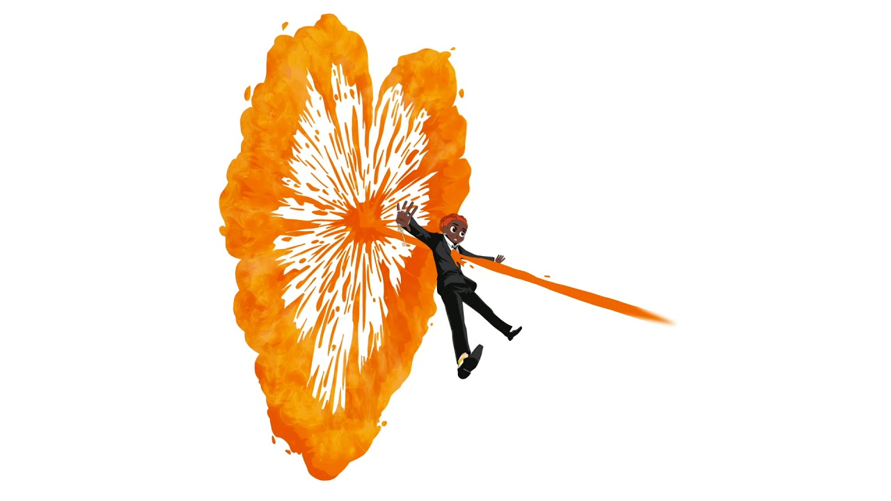
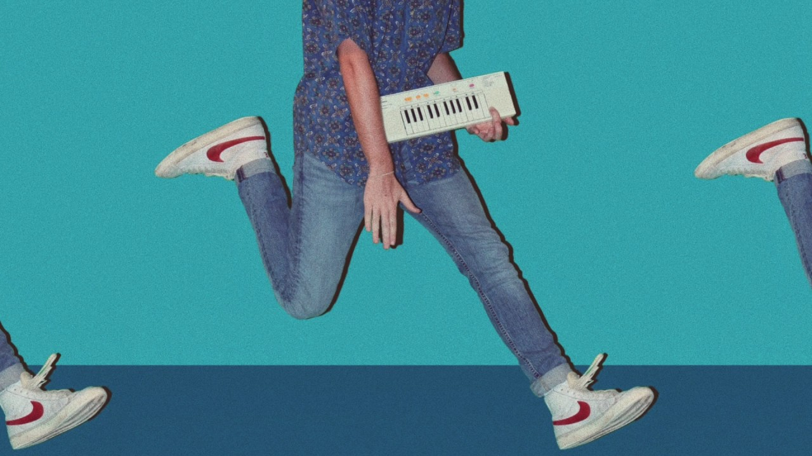
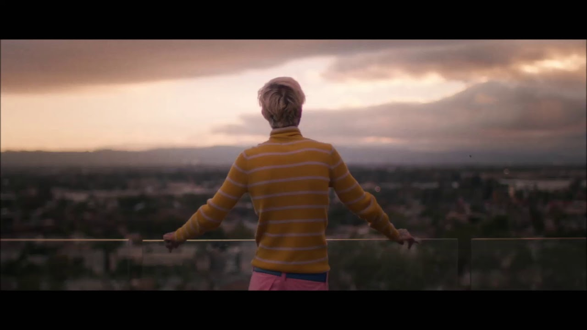

Hola que tal me llamo Alex y deseo compartir mis gustos musicales con los demas, se que son variados los generos , pero en este articulo les mostraare mis cantantes favoritos , como los mas inportantes , musicas que recomiendo de cada artista ( eso siempre varia de como este ese dia xd ) y una pequeña biografia de lso cantantes , como tambien las canciones que mas inportancia tengo, PD: siempre varia mis gustos musicales por el animo que tengo
CANTANTES
LIL PEEP
Gustav Elijah Åhr más conocido por su nombre artístico Lil Peep, fue un cantante, compositor, modelo, rapero, y productor musical sueco-estadounidense. Se hizo muy conocido por tener un fuerte estilo emocional en sus canciones
La verdad este cantante me agrada muchas de sus letras y su estilo , canciones que recomiendo:
-star shopping
-save that shit
DAYGLOW
Sloan Struble, más conocido como Dayglow, es un cantante, compositor y productor musical estadounidense.
Este cantante en especial amo sus letras y su ritmo , te transmite alegria y mucha tristesa a la vez , sirve para escucharlo en cualquier momento, recomiendo:
-Kindred - Sloan Struble(album)
-fuzzybrain(album)
XXXTENTACION
XXXTentación, fue un rapero, cantante y compositor estadounidense. Es considerado como uno de los raperos más importantes e influyentes de los últimos tiempos.
Lo considero uno de mis favoritos por que lo escucho desde hace años , pero es triste que ya nunca podra sacar nueva musica, recomiendo:
-everybody dies in their nightmares
-Arms Around You
LIL MOSEY Y LIL TECCA
bueno ellos son 2 cantantes que tienen casi el mismo estilo , por eso los considero como uno , y pues no ay mucho que hablar de ellos , solo que me agrada su musica , recomiendo:
-supreme hoodie(lil mosey)
-ransom(lil tecca)
-JETSKI (colaboracion)
CUCO
es un cantautor y productor discográfico mexicano-estadounidense de Hawthorne, California.
El es un cantante que escocho musica mas que todo por sus letras que escucho mucho con audifonos xd , recomiendo:
-lover is a day
-Bossa No Sé
LIL XAN
Es conocido por su sencillo ganador de una certificación de platino «Betrayed», mismo que alcanzó el puesto número 64 en el Billboard Hot 100.
lo escuche mucho por un tiempo me encanta su estilo, pero lamentablemente esta muriendo su musica , recomiendo:
-betrayad
-Deceived
-Good Girl
LIL UZI VERT
Symere Woods, cuyo nombre artístico es Lil Uzi Vert, es una celebridad estadounidense que se dedica al rap, canto y composición.
me gusta su forma de ser muy alegre y loco , su musica es muy movida , recomiendo:
-that way
-Adderall (Corvette Corvette)
BBNO$
Alexander Leon Gumuchian, más bien conocido como bbno$ es un rapero Canadiense y cantante de Vancouver.
Es un cantante muy raro y alegre y ve las cosas de diferente modo , recomiendo:
- help herself
-i remember
-C’est La Vier
TRIPPE REDD
es un rapero, cantante, compositor y músico estadounidense. Es mayormente conocido por sus canciones «Love Scars», «Poles 1469»
Me gusta su musica y sus letras ,recomiendo:
-Romeo & Juliet :)
-Love Me More
JUICE WRLD
fue un rapero, cantante, compositor y músico estadounidense. Se hizo conocido por los sencillos «All Girls Are the Same» y «Lucid Dreams».
es un cantante que me agradan muscho sus letras pero que ya no vive , recomiendo:
-All Girls Are The Same
-me and you
LIL PUMP
es un rapero y compositor estadounidense de origen colombiano. Es conocido por su canción «Gucci Gang», con la cual saltó a la fama internacional. La canción alcanzó la posición número 3 en los US Billboard Hot 100.
La verdad antes lo escuchaba mucho , pero ya no saca tanta musica y se estanco pero me sigue agrando algunas canciones , recomiendo:
-D rose
-Drug Addicts
KID KEO
Pàdua Keoma, más conocido como Kidd Keo, es uno de los artistas más influyentes del momento y un referente de la escena trap en español.
Es uno de los pocos cantantes en español que esucho , por que no me gusta saber que letras significan lo que escucho (solo para momentos especiales tradusco) ,recomiendo:
-Olvidate
-Como vas?
FOTOS

- 
- 
- 